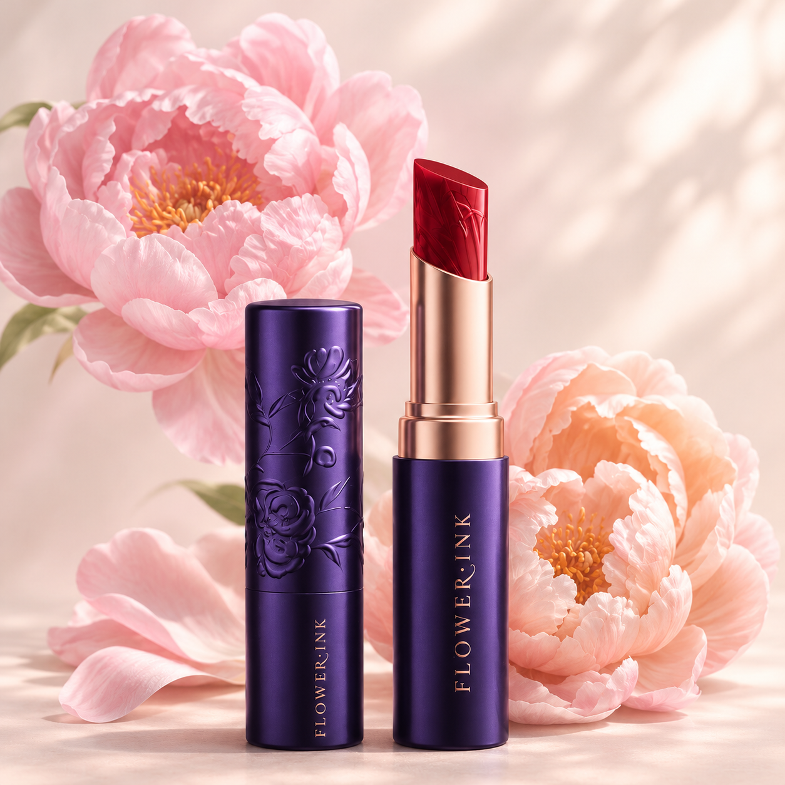
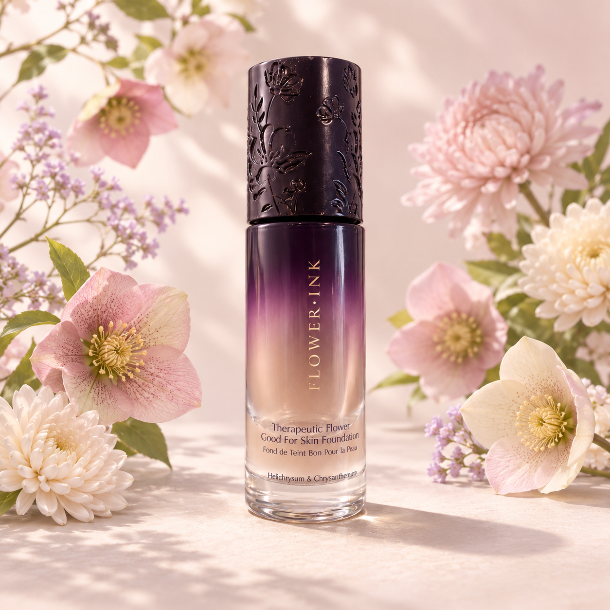
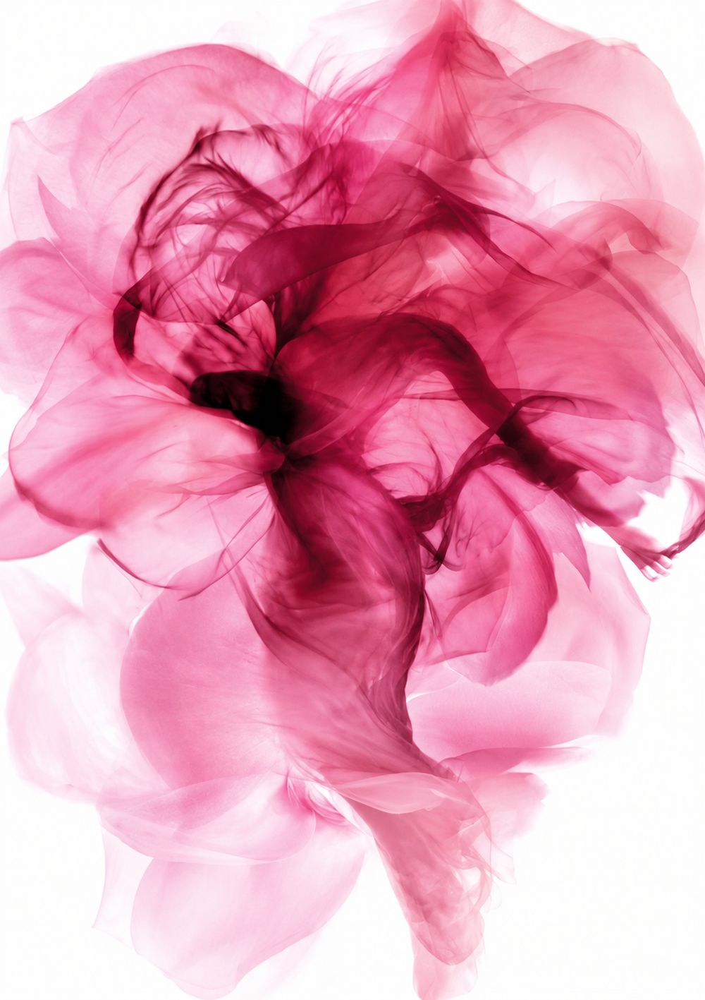

Makeup / Arriving after the skincare
Flower-dyed
makeup.
With the same goal as the skincare.
A different way to wear color.
A first look
Three ways to wear
a little Flower Ink.
Lip color. Complexion. The finishing touch.
Explore what is coming.

Lip color
Color, from a
different source.
Flower-dyed lipstick.
Color drawn from flower pigments instead of synthetic dyes. A finishing touch with flowers at its heart.
Arriving after the skincare.

Complexion
Coverage, with
care in mind.
Therapeutic Flowers
Good For Skin Foundation.
Coverage that supports skin for as long as it is worn. With the same goal as the skincare.
Shade details will be shared at launch.

The base
A considered
beginning.
The mattifying primer.
Before the color, the base. Meet the Flower Ink primer, another expression of our approach to beauty.
Arriving after the skincare.
The source makes the difference
Before it was color,
it was a flower.
Color drawn from flower pigments instead of synthetic dyes.
Treatment you wear, not something you remove to recover from.
Meet the flowers behind Flower Ink
Flower Ink never had to launch quickly.
It had to be right.
The makeup list
First word.
First access.
Makeup arrives after the skincare. Tell us what you would love to hear about.
A new chapter.
The same Flower Ink.
While you wait
First the care.
Then the color.
Nine botanical skincare formulas.
Your daily ritual, ready to explore.